M
Materiaal
de originele foto’s — klik een “↳ schrift”-markering elders op de siteOp de site staat mijn eigen tekst — maar dit is waar het vandaan komt: mijn notebook. Waar je elders op de site een ↳ schrift-markering ziet, staat hier een oranje rechthoek rond de exacte zin. Klik een quote onderaan, of een markering elders, dan scroll ik naar de foto en licht de rechthoek aan.
Bron-quotes (klik om naar de foto te gaan)P04-05 · 12 ideeën, nr. 11“Robot huisdier!”P18-19 · the future / food“van 70% uitgaven aan voedsel naar 10%”P12-13 · ideeën, nr. 2“Saladomat — automatische salade”P10-11 · Tegenlicht, game of drones“deze sector kan veel automatisering niet aan vanwege regels”Ikigai · open-source-annotatie“bedrijven begeleiden naar … open-source … automatisering software voor bedrijven”
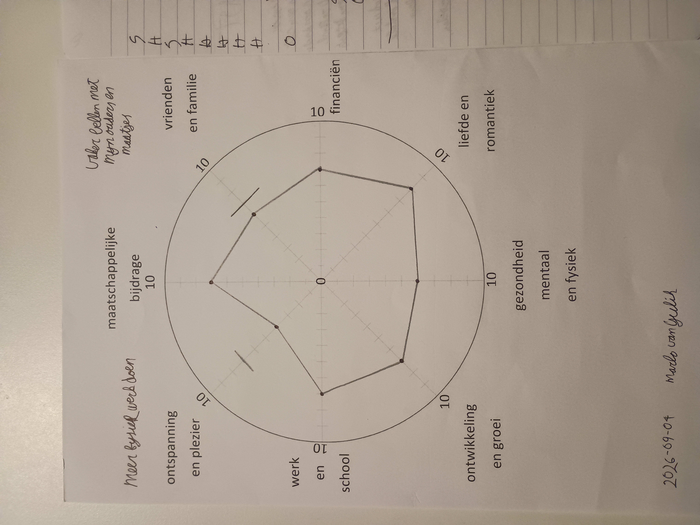
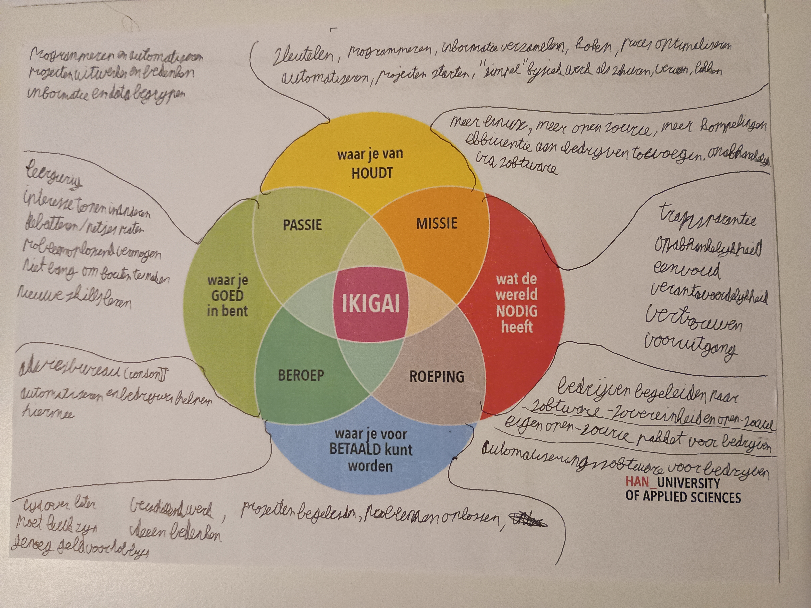
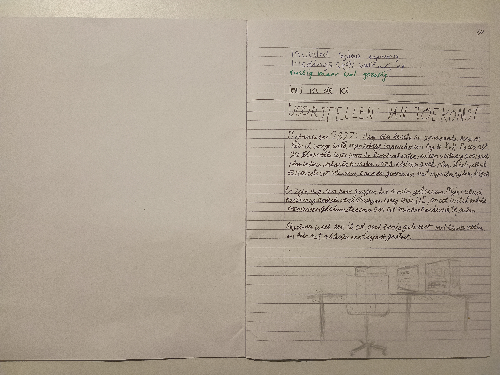
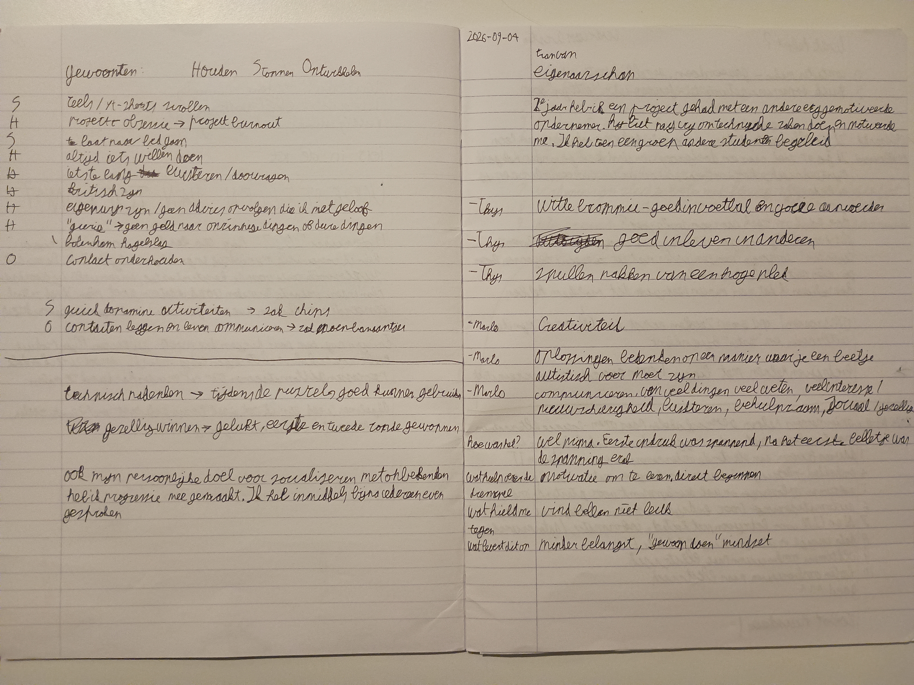
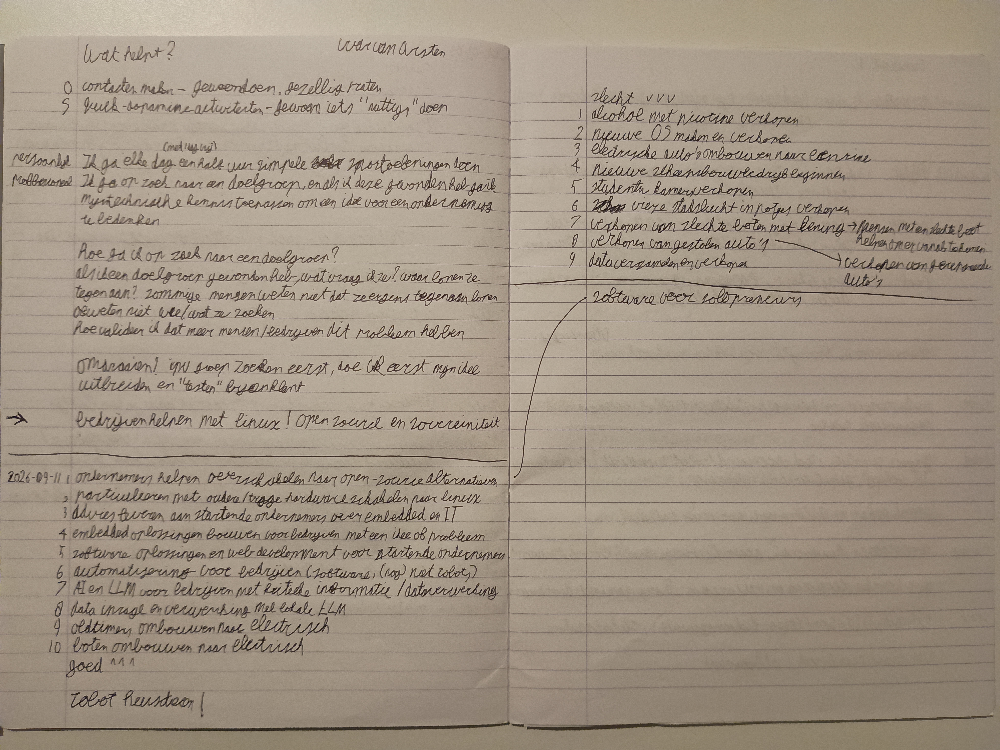
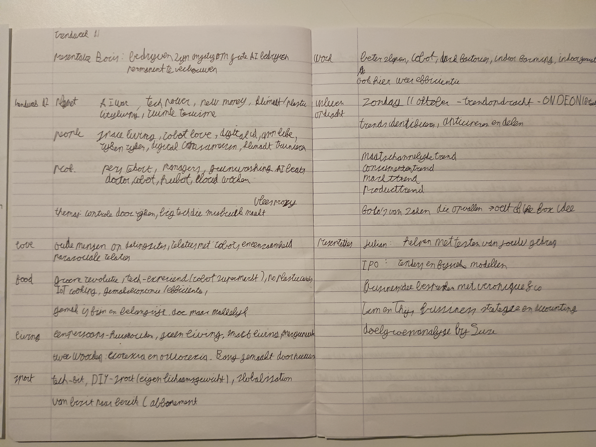
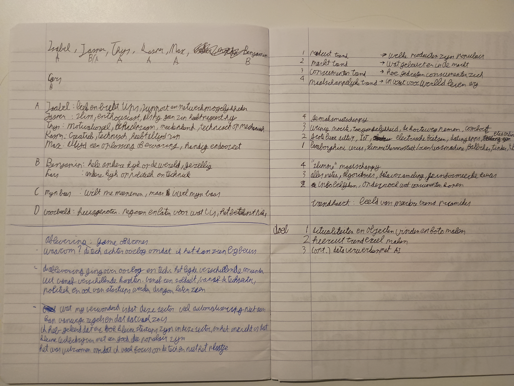
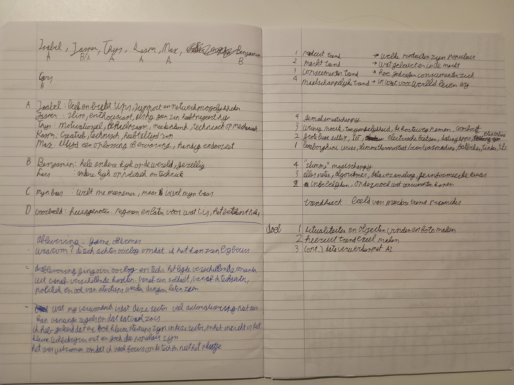
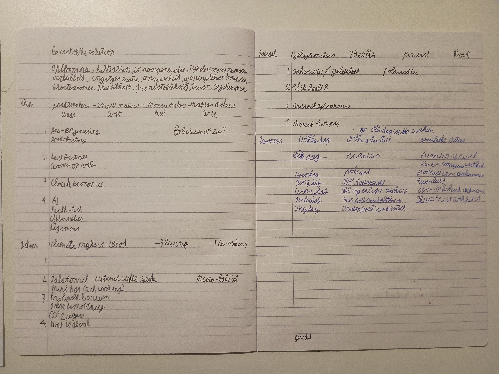
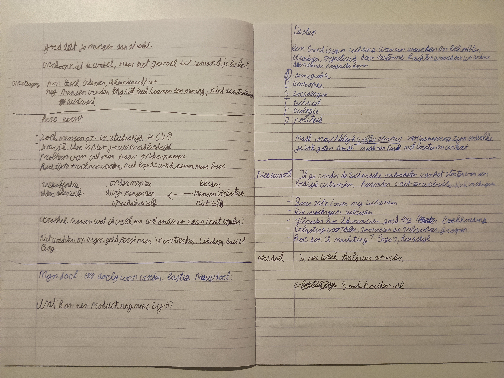
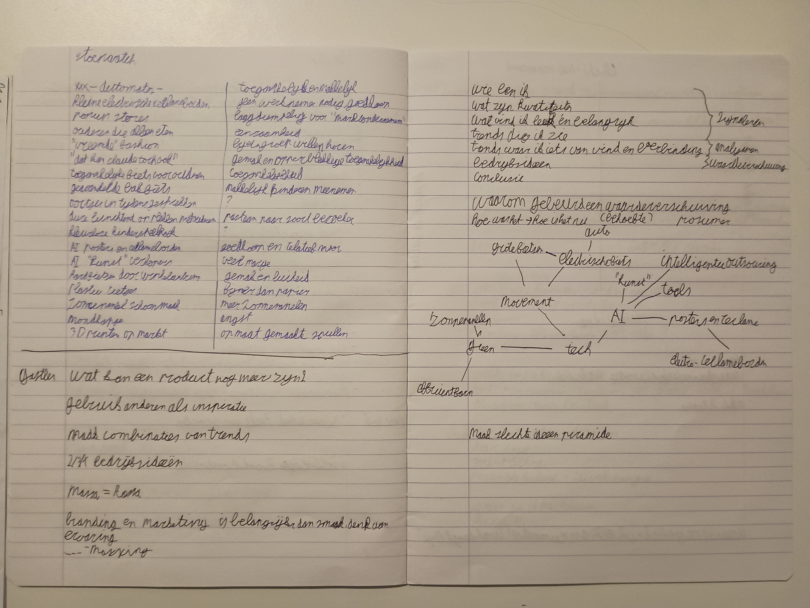
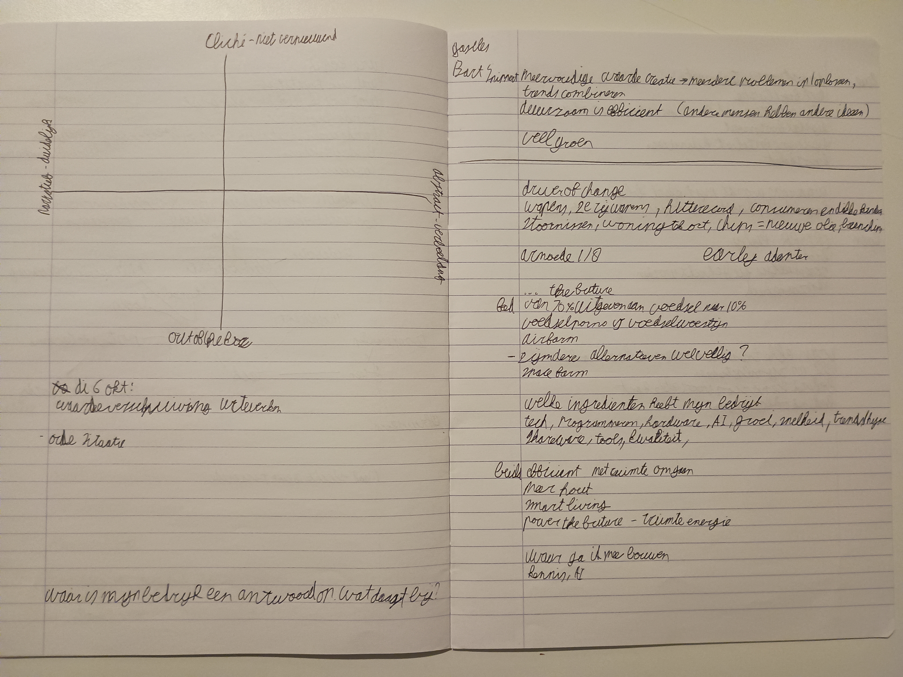
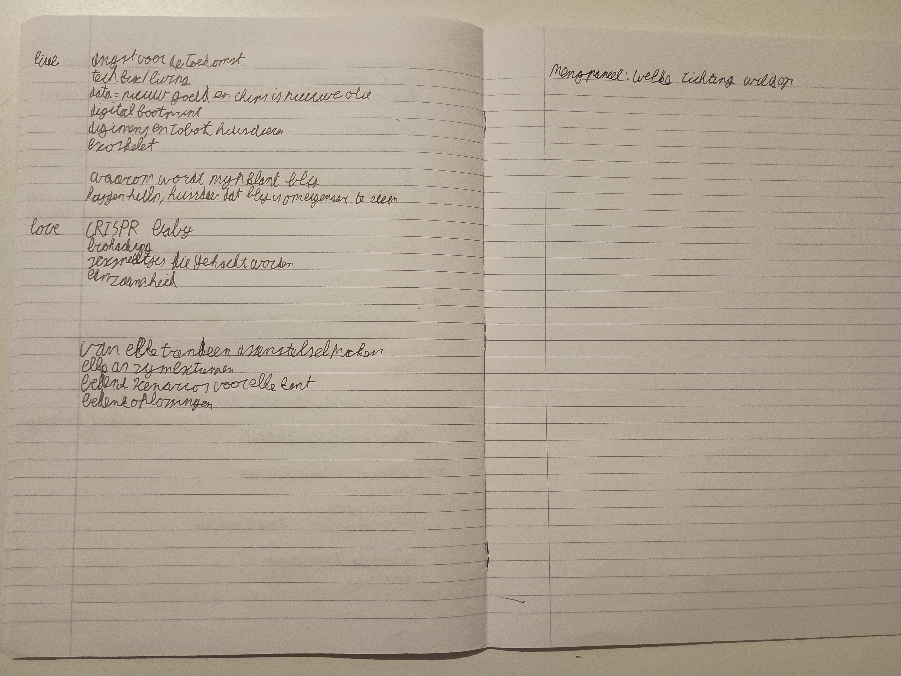